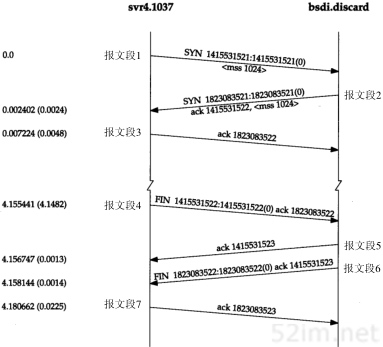
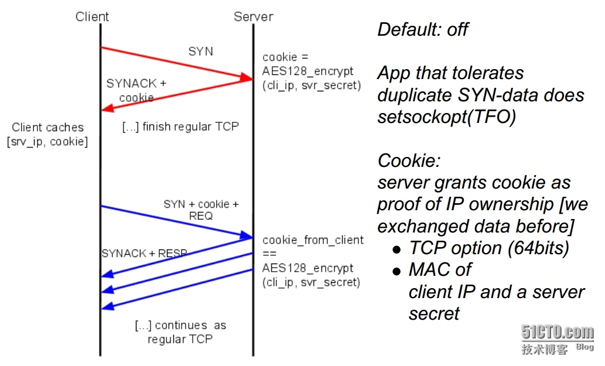

TCP配置调优
几个服务器配置调优点：
- TCP快速打开TFO
- 禁用慢启动重启
- 增大TCP的初始拥塞窗口
TFO
TCP三次握手

- SYN 客户端随机选择一个序列号x，并发送一个SYN分组，其中可能还包括了其他TCP标志和选项，比如图中的mss=1024的选项。
- SYN ACK 服务端给x+1设置为确认号，并选择自己的一个随机序列号y，追加自己的标志和选项
- ACK 客户端给y+1作为握手期间的最后一个ack分组。之后就可以发送数据，服务端需要等待收到ack分组之后才能发送数据。 为什么需要3次握手，主要是要初始化Sequence Number的初始值。通讯双方要互相通知对方自己初始化的Sequence Number，所以叫SYN(Synchronize Sequence Numbers)。 每次新建一个TCP连接都需要经历三次握手过程，带来的延迟使得新建连接要付出很大的成本。
TCP Fast Open
TFO是在原始TCP基础上进行扩展的协议，它基于TCP的改良之处是在三次握手期间可以进行应用数据的传输。Linux内核从3.7版本开始支持，3.13以后默认启动。但是nginx默认并没有启动TFO。

运行原理
第一次连接
1. 客户端发送SYN包，包尾加一个FOC请求，只有4个字节
2. 服务器端收到FOC请求，验证后会根据来源IP地址生成cookie(8个字节)，将这个Cookie加载到SYN + ACK包的末尾发送回去
3. 客户端缓存获取到的Cookie，给下次连接使用
第二次连接
1. 客户端发送SYN包，后面带上缓存的cookie，然后就是正式发送的数据
2. 服务器端验证Cookie正确，将数据交给上层应用处理得到相应的结果，然后在发送SYN+ACK时，不再等待客户端的ACK确认，即开始发送相应的数据。

Cookie
TFO的Cookie是用来快速打开的关键，所以有一些限制是需要遵守的：
1. Cookie的长度必须是偶数，且长度是0或者介于4~16
第一阶段CookieOpt=Nil的SYN包，这个时候还没有Cookie所以长度是0
2. TFO Server生成Cookie需要快速，生成的Cookie有时效性
- 简单的实现就是直接将客户端地址+Key进行AES-128加密，然后截断为64位传给客户端，下次直接对客户端的IP进行同样的操作，然后对比结果
- 时效性的话，可以定期更换Server端的Key，这样以前的Cookie都失效
3. TFO Client Cookie处理
- TFO客户端应该将Cookie保存下来，如果是多实例的客户端，需要针对每个客户端都应该保存一份
- TFO客户端尽量将MSS也保存下来，这样下次使用的时候第一次就可以知道传多少数据合适，不需要等ACK传回MSS才能知道
收益

除了页面加载变快改善了用户体验之外，TFO给服务器也带来了一些好处。由于每个请求都节省了一个RRT，相应地也减少了服务器端Cpu消耗。
慢启动重启
TCP的流量控制
流量控制是一种预防发送端过多的向接收端发送数据的机制。
第一次建立连接时，两端都会使用自身系统的默认设置来发送rwnd(receiver window)，告诉对方自己最大能保存多少数据。如果一端跟不上数据传输，它可以向发送端通告一个较小的窗口，如果窗口为零，则意味必须由应用层先清空缓冲区，才能继续接收数据，此时发送端暂停发送的等待接收端通过ACK重新发送一个新的窗口值。由于这个ACK报文段可能会丢失且不会被确认，有可能造成传输死锁。因此发送端会有一个零窗口探测定时器，当接收方的rwnd为0时，定时器开始启动，每隔一段时间，发送端会主动发送一个零窗口探测报文段，通过对端ACK来得知最新的窗口值。
慢启动
虽然流量控制可以避免发送端过多的向接收端发送数据，但是无法避免网络过载。rwnd只反映了服务器个体的情况，无法反映网络整体的情况。
为了避免网络过载的问题，慢启动引入了拥塞窗口(cwnd，congestion window)，用来表示发送方在得到接收方确认(ACK)之前，最大允许传输的未经确认的数据。客户端与服务端之间最大可以传输(未经ACK确认的)数据量取rwnd和cwnd变量中的最小值。cwnd与rwnd不同，它是发送方的一个内部参数，无需通知给接收方，其初始值比较小(Linux 3.0之前默认initCwnd为 3个TCP段，3.0之后调整为10)。
- 发送端刚开始用系统默认initCwnd发送报文段
- 在每收到一个新的报文段的ACK后，将cwnd增加至多一个MSS的数值(假设一开始窗口是1个段，发送一个确认一个，增长为2；发送2个，确认2个，增长为4...因此窗口是指数增长的）
- 因为cwnd是指数增长的，为了防止后期增长太快，需要另外一个变量--慢启动阈值ssthresh，当cwnd==ssthresh是，要预防拥塞的产生，开始执行拥塞预防算法，cwnd按线性增长
- 当发送端发现丢包，TCP即认为发生了网络拥塞，开始启动拥塞预防算法，调整cwnd大小，以避免造成更多的包丢失。
丢包有两种情况：
1. 等到RTO，重传数据包。TCP认为这种情况太糟糕，反应比较强烈。
- ssthresh = cwnd/2
- cwnd重置为1
- 进入慢启动过程
2. 快速重传，即在收到3个duplicate ACK时就开始重传，而不等待RTO，TCP认为能收到3个duplicate ACK说明网络不是那么糟糕，
- TCP Tahoe的实现跟RTO超时时相同
- TCP Reno的实现是
- cwnd = cwnd/2
- ssthresh = cwnd
- 进入快速恢复算法
快速恢复算法
- cwnd = ssthresh + 3*MSS（3的意思是确认有3个数据包被收到了）
- 重传Duplicate ACK指定的数据包
- 如果再收到Duplicate ACK，那么cwnd = cwnd + 1
- 如果收到新的ACK，那么cwnd设置初始的ssthresh，开始进入拥塞避免阶段
PRR(比例降速)是google发布的一个降窗算法，目的是改进丢包之后恢复的速度。根据谷歌的测试，实现新的算法之后，因丢包造成的平均连接延迟减少了3%~10%。PRR现在是Linux 3.2+内核默认的拥塞预防算法。
PRR算法的特点：
1. 不再减半，而是完全根据拥塞算法计算出的ssthresh，调整窗口逼近它；
2. 执行的过程不再受当前的in_flight控制，而是根据快速重传以来的发送/接收ACK的总数量将窗口按照比例的方式逼近ssthresh；
3. 如果窗口降到ssthresh一下，算法执行慢启动将其拉升至ssthresh附近；
4. 快速恢复阶段，最多还可以发送多少数据，不再限定为1，而是取决于“当前收到的ACK/SACK总量，发出数据总量，窗口与ssthresh的关系”。
慢启动重启(Slow-Start Restart)
慢启动重启机制会在连接空闲一段时间后重置连接的拥塞窗口。在连接空闲的同时，网络状况可能发生了变化，为了避免拥塞，应该将拥塞窗口重置会“安全的”默认值。
SSR对于那些会出现突发空闲的长周期TCP连接（比如HTTP的keep-alive连接）有很大影响。因此，建议在服务器端禁用SSR。在linux上可以通过以下命令来查看和禁用SSR
sysctl net.ipv4.tcp_slow_start_after_idle
sysctl -w net.ipv4.tcp_slow_start_after_idle=0